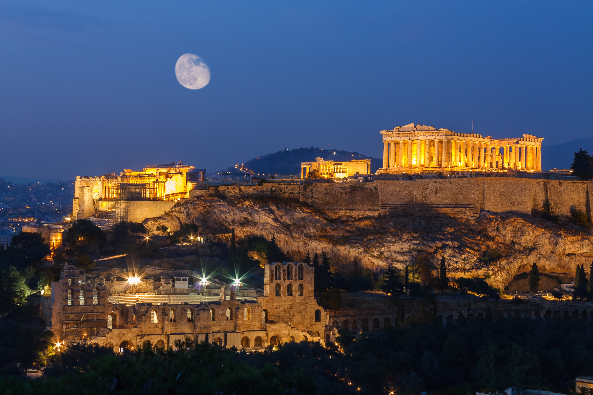

Global Landmarks
Global Landmarks
Eiffel Tower
Everyone puts the Eiffel Tower top of the list of things to see in Paris. It is a wrought iron lattice tower on the Champ de Mars in Paris, France. Constructed in 1889 as the entrance to the 1889 World's Fair. The tower is the tallest structure in Paris and the most-visited paid monument in the world

Colosseum
The Colosseum or Coliseum, also known as the Flavian Amphitheatre, is an oval amphitheatre in the centre of the city of Rome, Italy. Built of concrete and sand, it is the largest amphitheatre ever built. This site is breathtaking not only for its beauty but also for their history and age.

Stonehenge
Historians estimate the ancient and perplexing ruins of Stonehenge in Wiltshire, England, were built in 3100 B.C. Made out of Welsh Sandstone, Bluestone and Sarsen, these landmarks are perplexing today. Stonehenge offers a glimpse at monuments that required an estimated 30 million hours of manual labor, according to Stonehenge.co.uk.
Tower Bridge
Tower Bridge is a combined bascule and suspension bridge in London. The bridge crosses the River Thames close to the Tower of London and has become an iconic symbol of London. Inside the bridge is the Tower bridge Exhibition, a display area that encompasses the walkway and the two famous towers where you can observe the Victorian engine room.

Acropolis
The Acropolis of Athens is an ancient citadel located on a high rocky outcrop above the city of Athens and contains the remains of several ancient buildings of great architectural and historic significance, the most famous being the Parthenon.